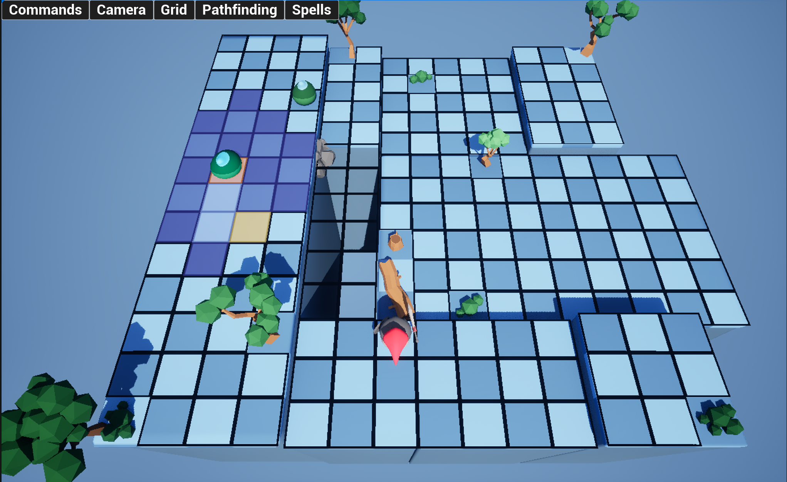
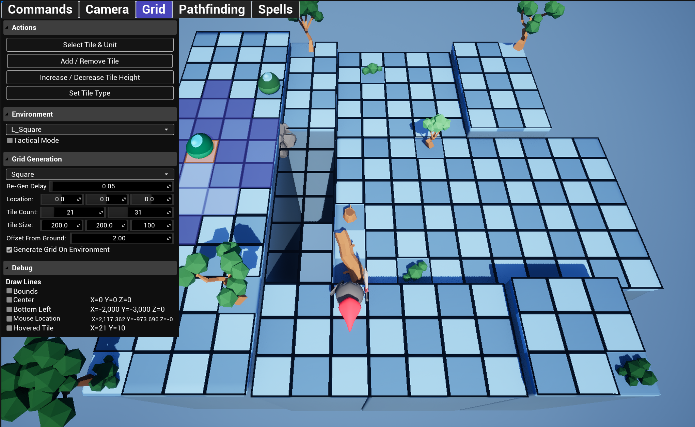
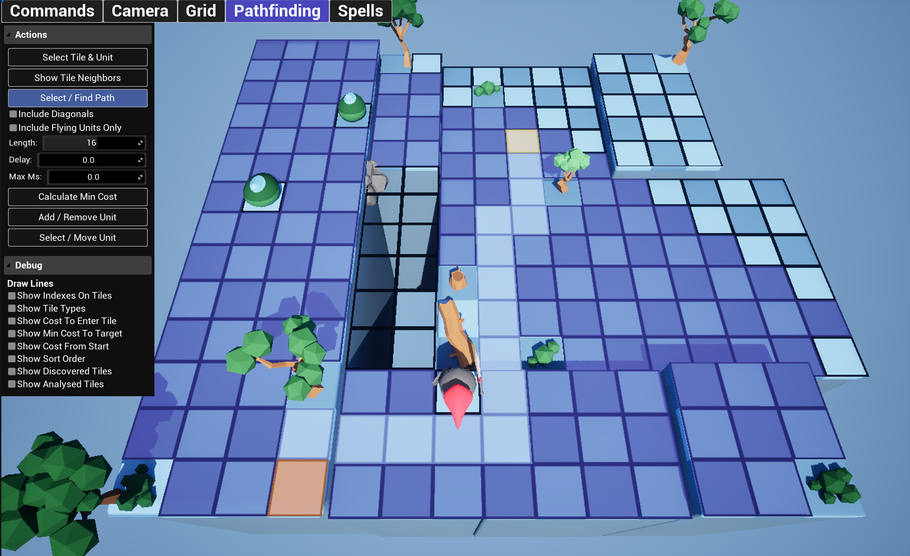
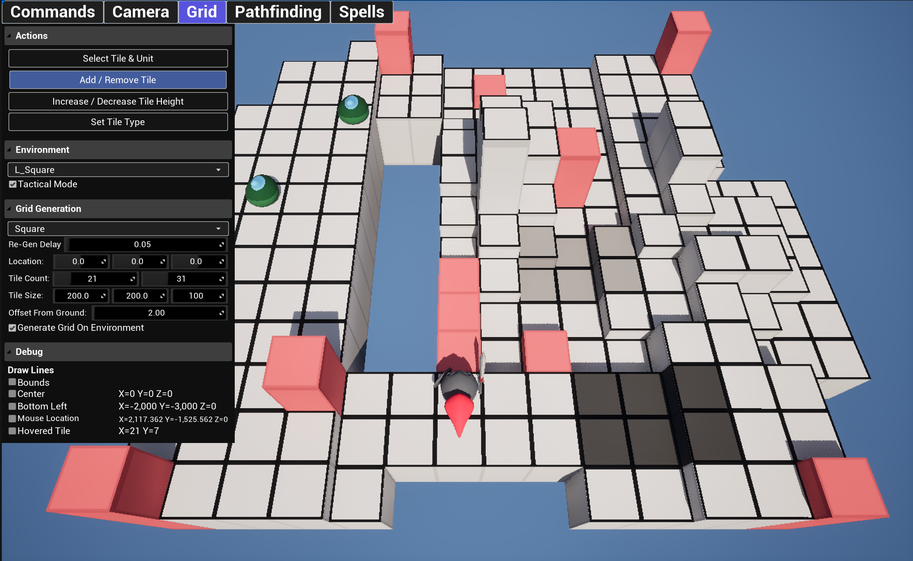

Echoes of the Anvil
Platform:
Windows
Engine:
Unreal Engine
Language:
Unreal Blueprints
Tools Used:
Unreal Engine
Team Size:
1
Overview
Echoes of the Anvil is a personal project that I created to learn more about Unreal Engine, and Unreal Blueprints. It is a 3D Tactical Role-Playing game inspired by Triangle Strategy, Final Fantasy Tactics, and Kingdom Come Deliverence.
Goals
- Develop for Unreal: Create a playable game/demo using Unreal Engine.
- Unreal Blueprints: Learn how to utilize unreal blueprints and how to integrate them with c++ code.
- Unreal Widgets: Learn about making UI elements in Unreal Engine and use them throughout development to become proficient.
Mechanics and Gameplay
- Three dimenional grid based environemts that allow tactical turn-based combat in three dimensions.
- Modifiable tiles so the terrain can be altered during gameplay.
- Tactical mode to allow users to see only the absolute needed information to reduce visable clutter.
Design Considerations
- Unique Gameplay: I wanted this game to separate itself from the games that inspired it, by leaning into environment modification it would add an additional element to combat compared to other games where at most you could add effects to tiles.
Possible Future Enhancements
- Expanded Content: Finalize several levels for players to tryout.
- Story: Flesh out and write a interesting and cohesive story to add reasons for the characters to be in combat.
- Fully playable demo: The project has been worked on very slowly has mutliple jobs and school has taken alot of my free time. But I would like to create a public demo that people could play and give feedback.